Training and inference figures
training stage progress
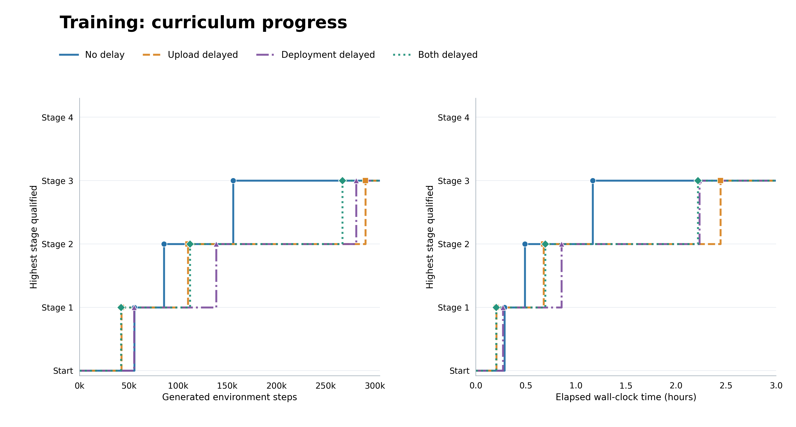
PNG · PDF · SVG
training stage progress environment steps
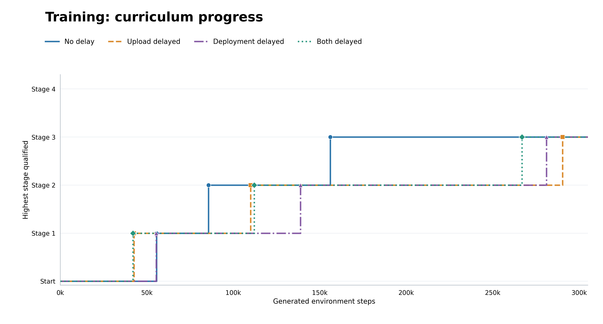
PNG · PDF · SVG
training stage progress wallclock
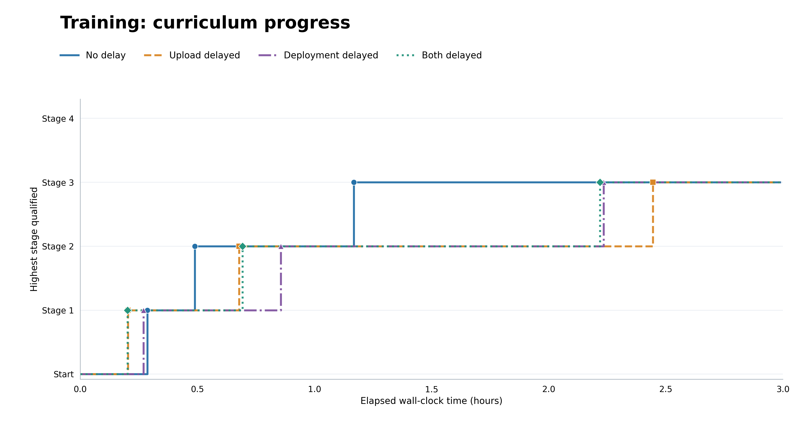
PNG · PDF · SVG
training success environment steps
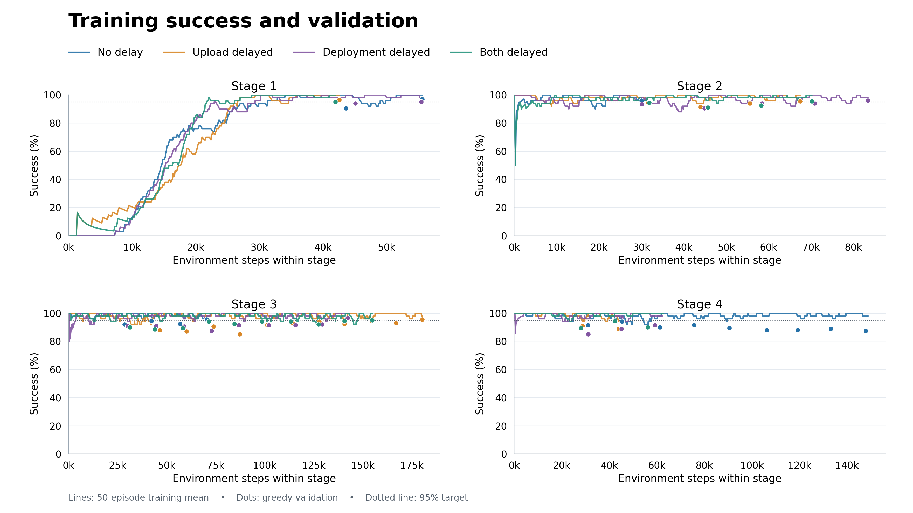
PNG · PDF · SVG
training success wallclock
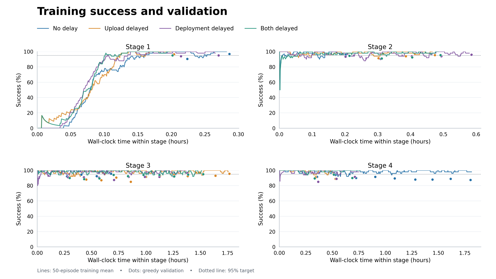
PNG · PDF · SVG
inference mission delay 5
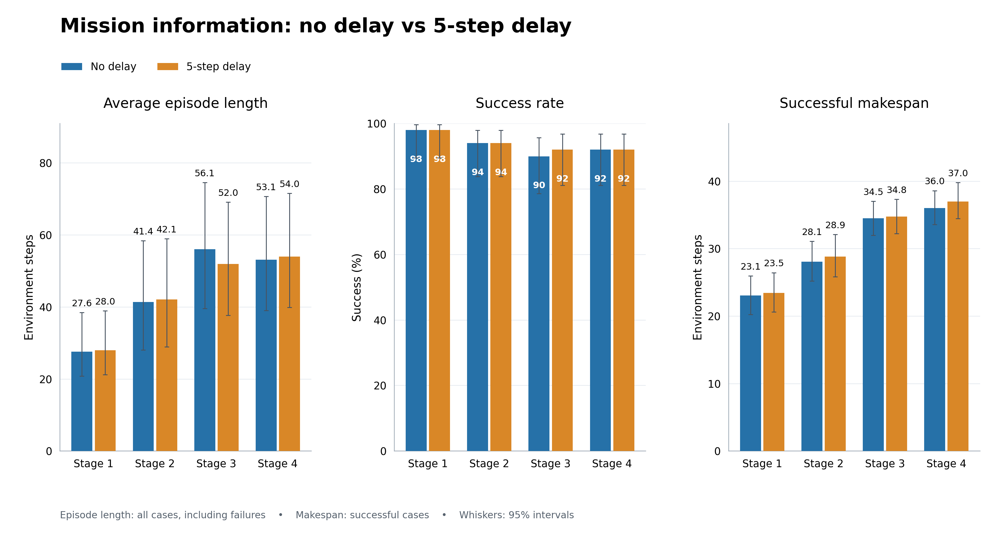
PNG · PDF · SVG
inference mission delay 20
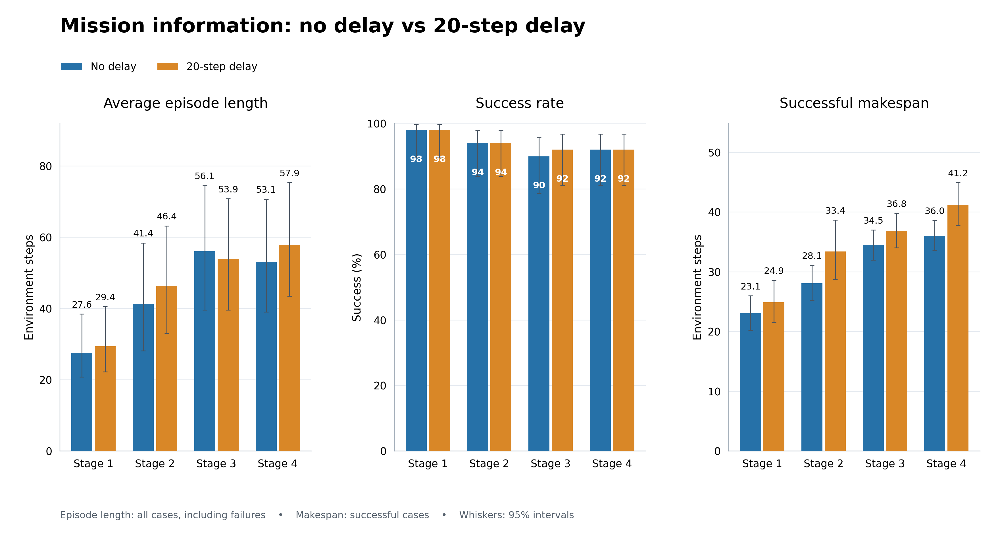
PNG · PDF · SVG
inference mission delay sweep
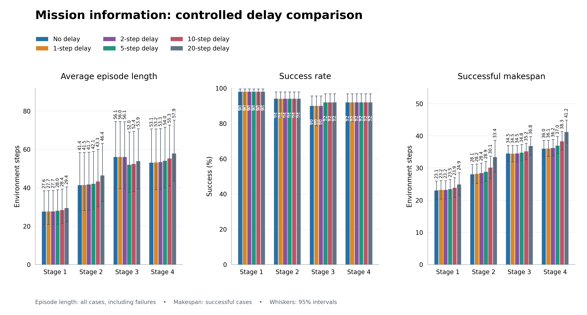
PNG · PDF · SVG
inference stale fields 20
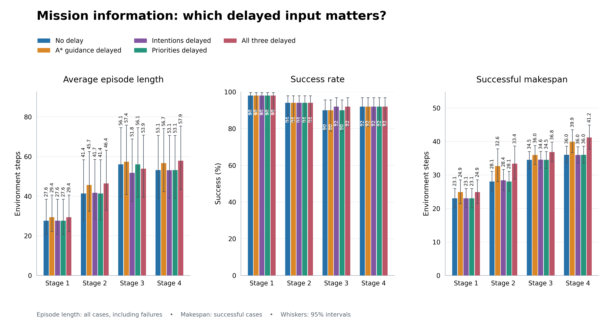
PNG · PDF · SVG
inference peer cutoff 20
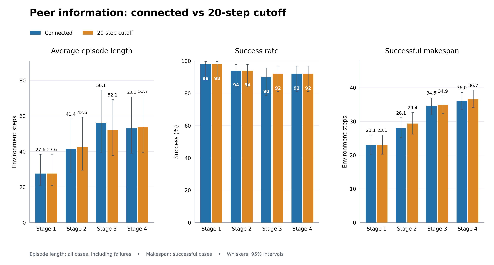
PNG · PDF · SVG
inference orbital delay
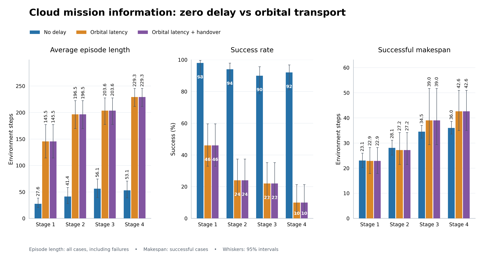
PNG · PDF · SVG
inference handover increment
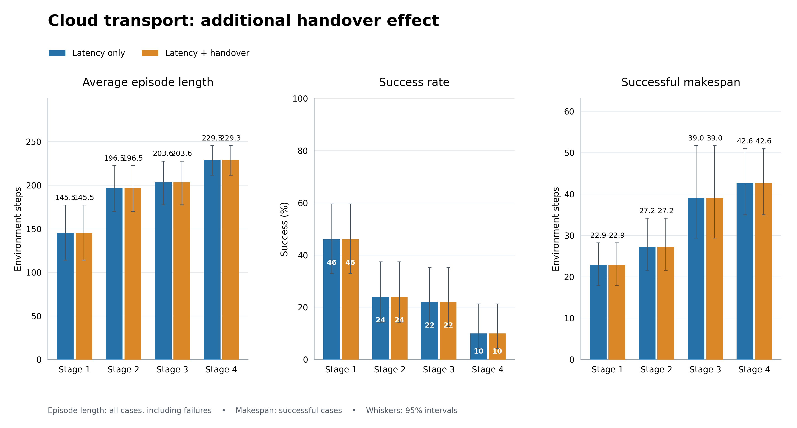
PNG · PDF · SVG
inference orbital contention
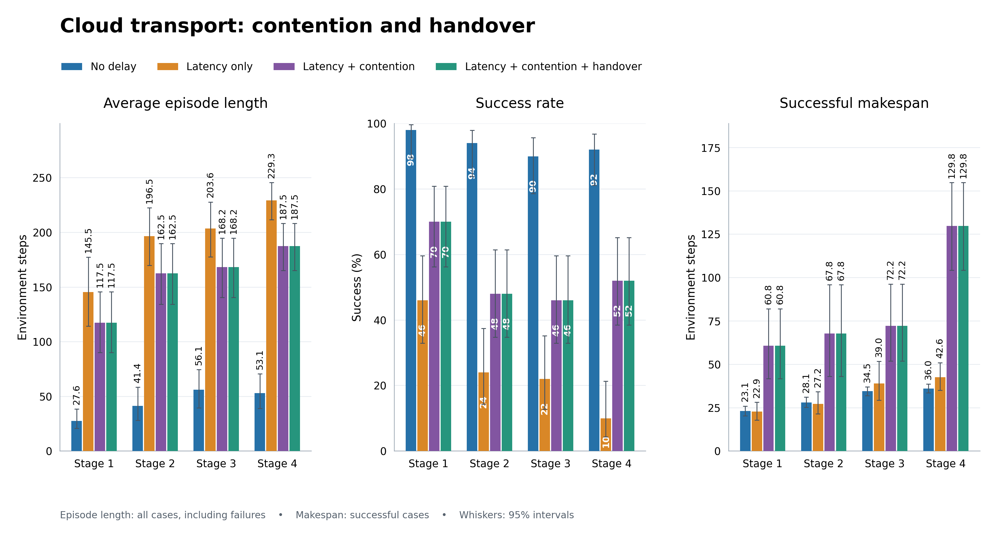
PNG · PDF · SVG
Measured exploratory results. Training did not qualify the final stage; inference uses its frozen final checkpoint. Protocol, source hashes and stage identities are retained separately in README.md and manifest.json.